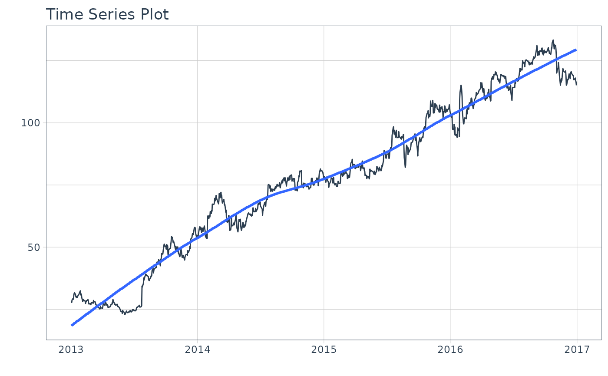
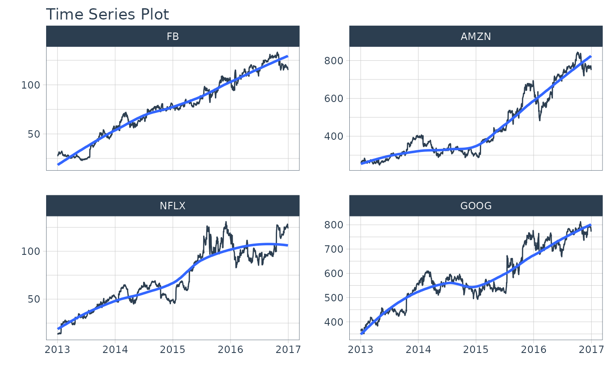
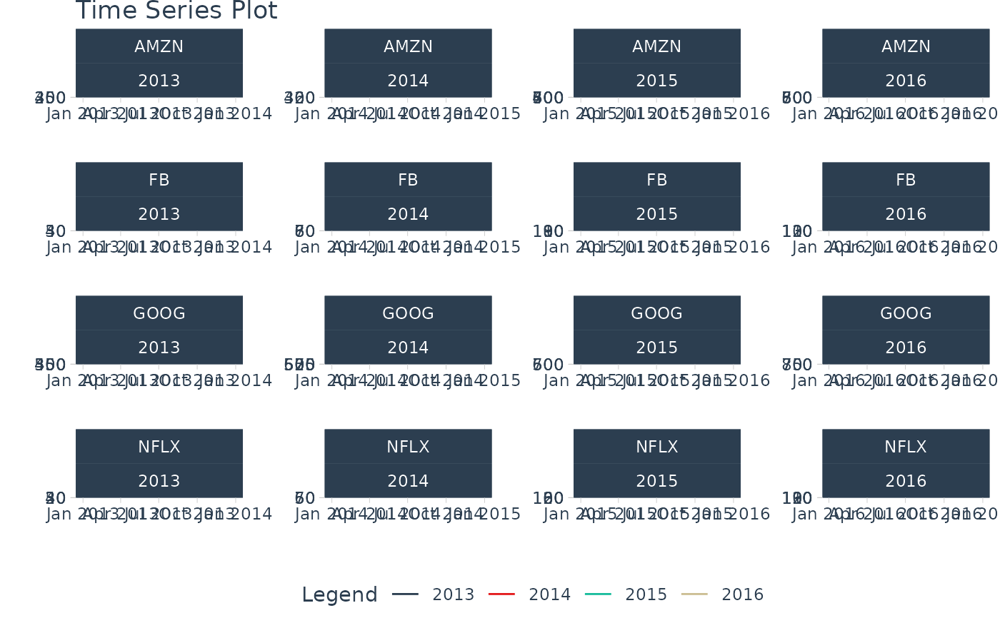
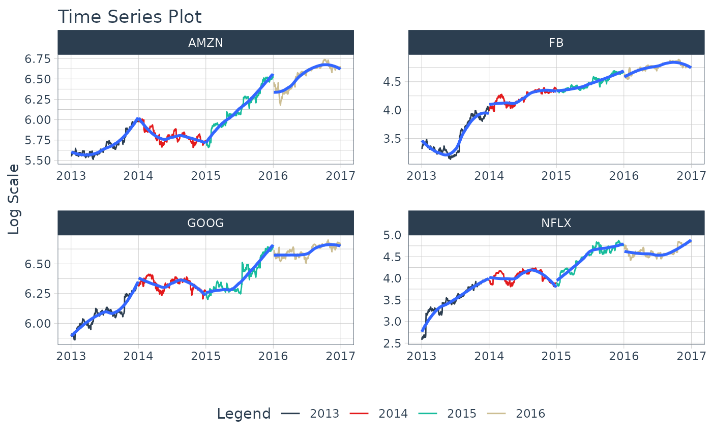

A workhorse time-series plotting function that generates interactive plotly plots,
consolidates 20+ lines of ggplot2 code, and scales well to many time series.
Usage
plot_time_series(
.data,
.date_var,
.value,
.color_var = NULL,
.facet_vars = NULL,
.facet_ncol = 1,
.facet_nrow = 1,
.facet_scales = "free_y",
.facet_dir = "h",
.facet_collapse = FALSE,
.facet_collapse_sep = " ",
.facet_strip_remove = FALSE,
.line_color = "#2c3e50",
.line_size = 0.5,
.line_type = 1,
.line_alpha = 1,
.y_intercept = NULL,
.y_intercept_color = "#2c3e50",
.smooth = TRUE,
.smooth_period = "auto",
.smooth_message = FALSE,
.smooth_span = NULL,
.smooth_degree = 2,
.smooth_color = "#3366FF",
.smooth_size = 1,
.smooth_alpha = 1,
.legend_show = TRUE,
.title = "Time Series Plot",
.x_lab = "",
.y_lab = "",
.color_lab = "Legend",
.interactive = TRUE,
.plotly_slider = FALSE,
.trelliscope = FALSE,
.trelliscope_params = list()
)Arguments
- .data
A
tibbleordata.framewith a time-based column- .date_var
A column containing either date or date-time values
- .value
A column containing numeric values
- .color_var
A categorical column that can be used to change the line color
- .facet_vars
One or more grouping columns that broken out into
ggplot2facets. These can be selected usingtidyselect()helpers (e.gcontains()).- .facet_ncol
Number of facet columns.
- .facet_nrow
Number of facet rows (only used for
.trelliscope = TRUE)- .facet_scales
Control facet x & y-axis ranges. Options include "fixed", "free", "free_y", "free_x"
- .facet_dir
The direction of faceting ("h" for horizontal, "v" for vertical). Default is "h".
- .facet_collapse
Multiple facets included on one facet strip instead of multiple facet strips.
- .facet_collapse_sep
The separator used for collapsing facets.
- .facet_strip_remove
Whether or not to remove the strip and text label for each facet.
- .line_color
Line color. Overrided if
.color_varis specified.- .line_size
Line size.
- .line_type
Line type.
- .line_alpha
Line alpha (opacity). Range: (0, 1).
- .y_intercept
Value for a y-intercept on the plot
- .y_intercept_color
Color for the y-intercept
- .smooth
Logical - Whether or not to include a trendline smoother. Uses See
smooth_vec()to apply a LOESS smoother.- .smooth_period
Number of observations to include in the Loess Smoother. Set to "auto" by default, which uses
tk_get_trend()to determine a logical trend cycle.- .smooth_message
Logical. Whether or not to return the trend selected as a message. Useful for those that want to see what
.smooth_periodwas selected.- .smooth_span
Percentage of observations to include in the Loess Smoother. You can use either period or span. See
smooth_vec().- .smooth_degree
Flexibility of Loess Polynomial. Either 0, 1, 2 (0 = lest flexible, 2 = more flexible).
- .smooth_color
Smoother line color
- .smooth_size
Smoother line size
- .smooth_alpha
Smoother alpha (opacity). Range: (0, 1).
- .legend_show
Toggles on/off the Legend
- .title
Title for the plot
- .x_lab
X-axis label for the plot
- .y_lab
Y-axis label for the plot
- .color_lab
Legend label if a
color_varis used.- .interactive
Returns either a static (
ggplot2) visualization or an interactive (plotly) visualization- .plotly_slider
If
TRUE, returns a plotly date range slider.- .trelliscope
Returns either a normal plot or a trelliscopejs plot (great for many time series) Must have
trelliscopejsinstalled.- .trelliscope_params
Pass parameters to the
trelliscopejs::facet_trelliscope()function as alist(). The only parameters that cannot be passed are:ncol: use.facet_ncolnrow: use.facet_nrowscales: usefacet_scalesas_plotly: use.interactive
Details
plot_time_series() is a scalable function that works with both ungrouped and grouped
data.frame objects (and tibbles!).
Interactive by Default
plot_time_series() is built for exploration using:
Interactive Plots:
plotly(default) - Great for exploring!Static Plots:
ggplot2(set.interactive = FALSE) - Great for PDF Reports
By default, an interactive plotly visualization is returned.
Scalable with Facets & Dplyr Groups
plot_time_series() returns multiple time series plots using ggplot2 facets:
group_by()- If groups are detected, multiple facets are returnedplot_time_series(.facet_vars)- You can manually supply facets as well.
Can Transform Values just like ggplot
The .values argument accepts transformations just like ggplot2.
For example, if you want to take the log of sales you can use
a call like plot_time_series(date, log(sales)) and the log transformation
will be applied.
Smoother Period / Span Calculation
The .smooth = TRUE option returns a smoother that is calculated based on either:
A
.smooth_period: Number of observationsA
.smooth_span: A percentage of observations
By default, the .smooth_period is automatically calculated using 75% of the observertions.
This is the same as geom_smooth(method = "loess", span = 0.75).
A user can specify a time-based window (e.g. .smooth_period = "1 year")
or a numeric value (e.g. smooth_period = 365).
Time-based windows return the median number of observations in a window using tk_get_trend().
Examples
library(tidyverse)
library(tidyquant)
library(lubridate)
library(timetk)
# Works with individual time series
FANG %>%
filter(symbol == "FB") %>%
plot_time_series(date, adjusted, .interactive = FALSE)

# Works with groups
FANG %>%
group_by(symbol) %>%
plot_time_series(date, adjusted,
.facet_ncol = 2, # 2-column layout
.interactive = FALSE)

# Can also group inside & use .color_var
FANG %>%
mutate(year = year(date)) %>%
plot_time_series(date, adjusted,
.facet_vars = c(symbol, year), # add groups/facets
.color_var = year, # color by year
.facet_ncol = 4,
.facet_scales = "free",
.facet_collapse = TRUE, # combine group strip text into 1 line
.interactive = FALSE)

# Can apply transformations to .value or .color_var
# - .value = log(adjusted)
# - .color_var = year(date)
FANG %>%
plot_time_series(date, log(adjusted),
.color_var = year(date),
.facet_vars = contains("symbol"),
.facet_ncol = 2,
.facet_scales = "free",
.y_lab = "Log Scale",
.interactive = FALSE)
